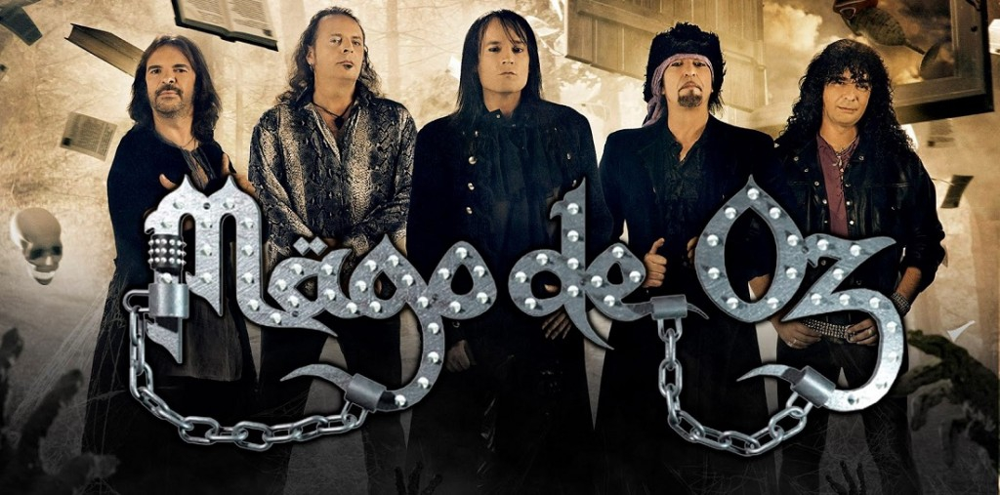

Discografia
Integrantes
Enlaces
Discografia
Integrantes
Enlaces
INTEGRANTES
- Jesús Hernández "Txus di Fellatio": Bateria (1998-presente)
- Carlos Prieto "Mohamed": Violín (1992-presente)
- Patricia Tapia: Coros y voz secundaria (2007-presente)
- José Manuel Pizarro "Josema": Flauta travesera, whistle, pito
- Fernando Mainer: Bajo (2012-presente)
- Javier Domínguez "Zeta": Voz (2012-presente)
- Manuel Seoane: Guitarra Solista/Rítmica (2018-presente)
- Víctor de Andrés: Guitarra Solista/Rítmica (2020-presente)
- Manuel Ramil: Teclados, sintetizadores (2022 - presente)